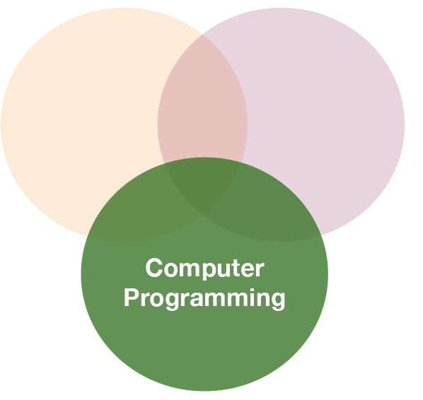
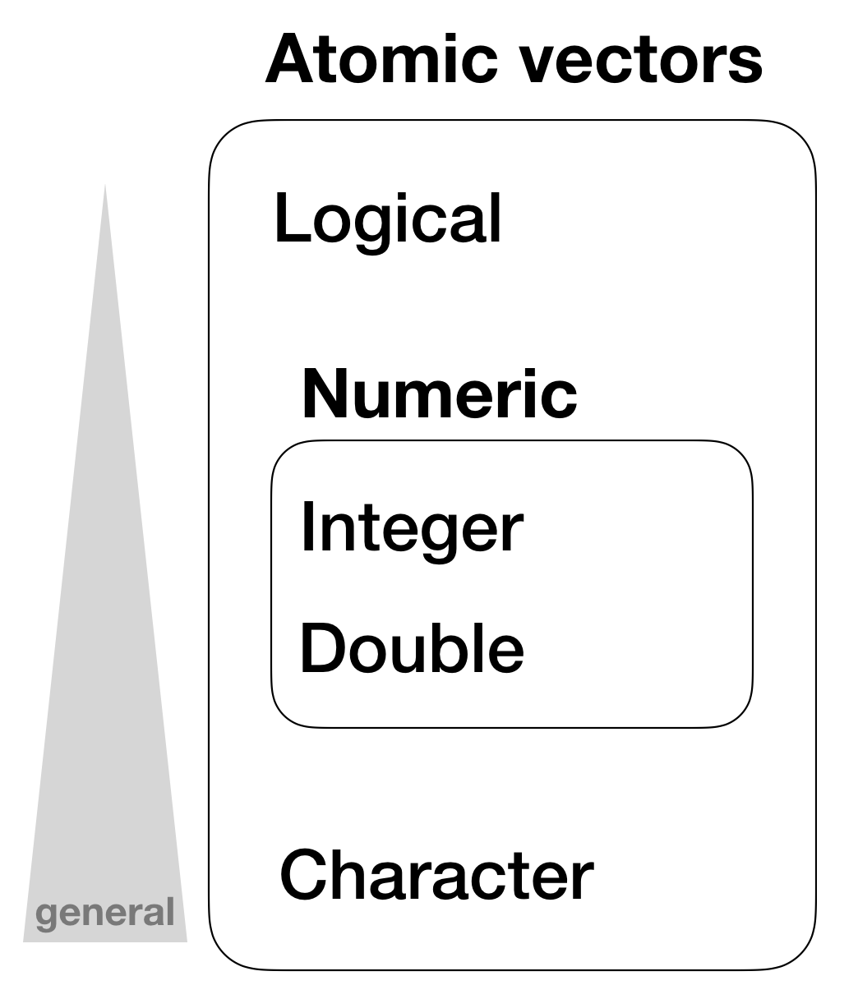
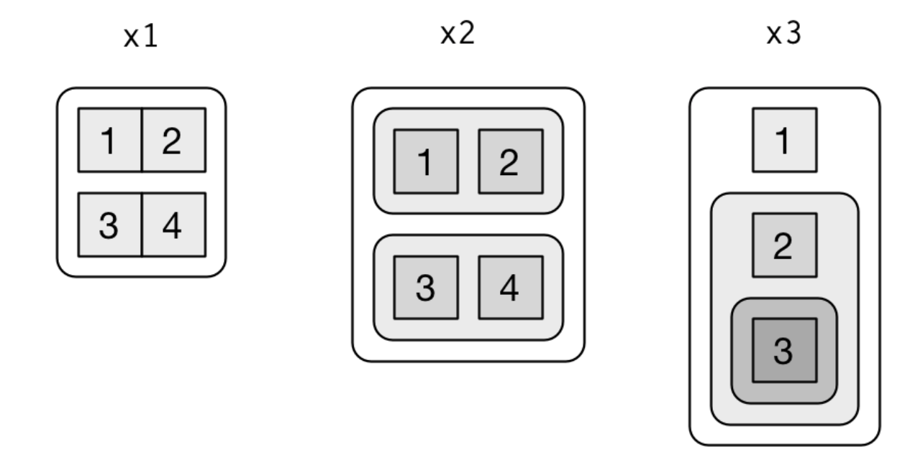
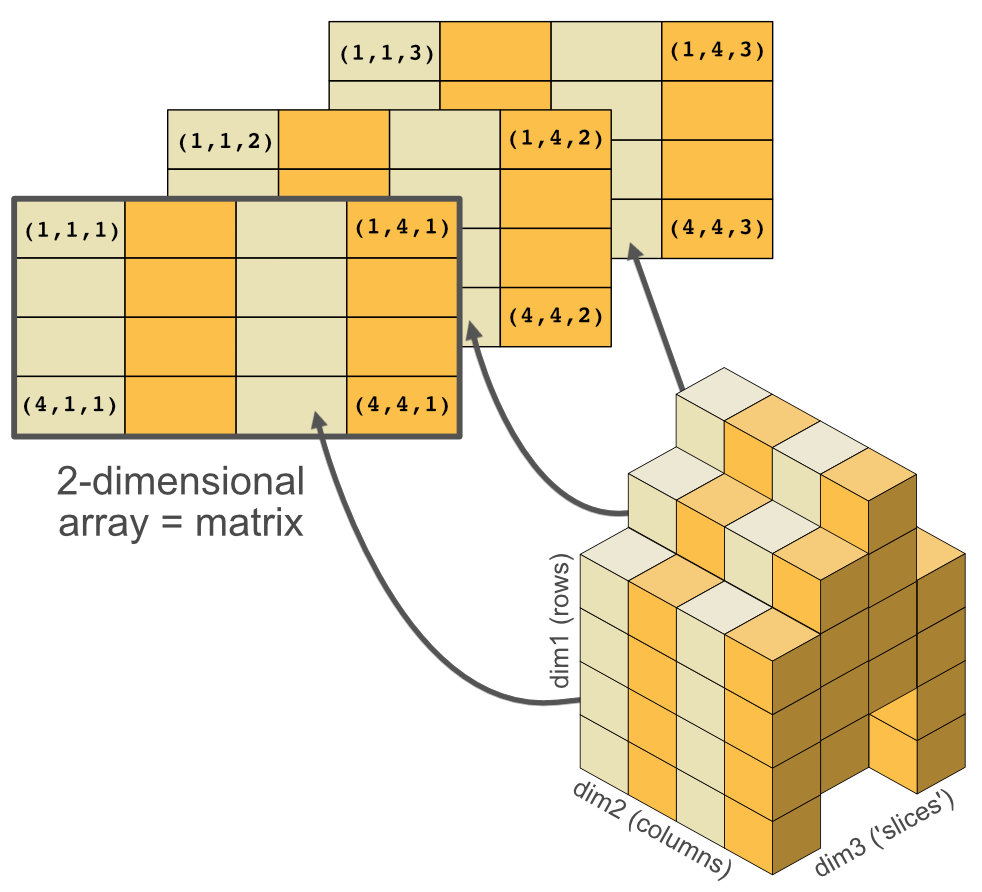
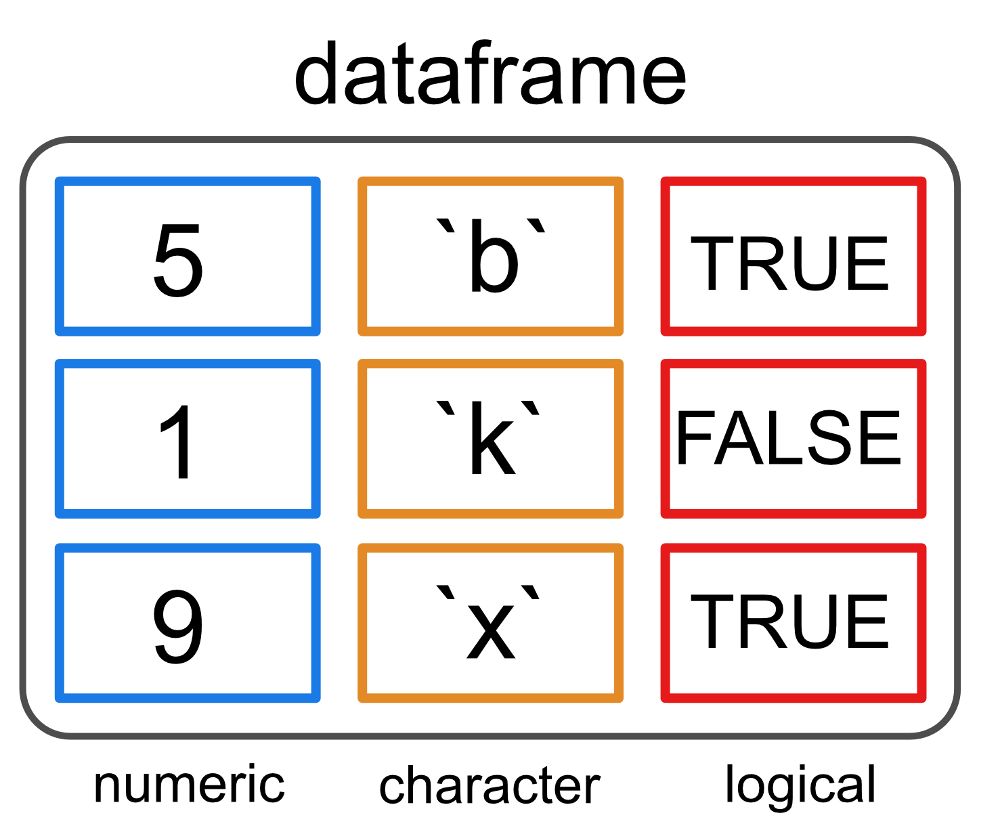

Datenanalyse mit R
2 - Datenstrukturen
Saskia A. Otto
BSH 11/02 - 13/02 2019
Datenstrukturen
R’s Grund-Datenstrukturen lassen sich einteilen in Ihre Dimensionalität (1d, 2d, or nd) und Homogenität ihrer Datentypen. Fünf Datentypen lassen sich damit unterscheiden:
| Dimensions | Homogeneous | Heterogeneous |
|---|---|---|
| 1d | Atomic vector | List |
| 2d | Matrix | Data frame |
| nd | Array |
The einfachste Sruktur: atomare Vektoren

Atomare Vektoren
- werden mit
c()genieriert (kurz for combine):
dbl_var <- c(1, 2.5, 4.5)
# Verwende TRUE und FALSE (oder T und F) um logische Vektoren zu erstellen
log_var <- c(TRUE, FALSE, T, F)
chr_var <- c("these are", "some strings")
Atomare Vektoren
- werden mit
c()genieriert (kurz for combine):
dbl_var <- c(1, 2.5, 4.5)
# Verwende TRUE und FALSE (oder T und F) um logische Vektoren zu erstellen
log_var <- c(TRUE, FALSE, T, F)
chr_var <- c("these are", "some strings")
- oder mit
seq()(= sequence)
seq(from = 0, to = 1, by = 0.2)
## [1] 0.0 0.2 0.4 0.6 0.8 1.0
- oder
rep()(= repeat)
rep("a", times = 5)
## [1] "a" "a" "a" "a" "a"
Atomare Vektoren
- sind immer flach, auch wenn man
c()verschachtelt:
c(1, c(2, c(3, 4)))
## [1] 1 2 3 4
# das gleiche wie
c(1, 2, 3, 4)
## [1] 1 2 3 4
- haben eine bestimmte Länge die mit
length()ermittelt werden kann:
x <- c(200, 50, 40, 1, 100, 20)
length(x)
## [1] 6
Hierarchie von Datentypen in atomaren Vektoren

Wichtige tools zum Arbeiten mit Vektoren
Datentypumwandlung ('coercion')
Handling Vektoren unterschiedlicher Länge
Namen für Elemente in Vektoren
Extrahieren von Elemente bzw. Induzieren von Vektoren
1. Coercion
- Alle Elemente eines atomaren Vektors müssten den gleichen Datentypen haben
- Unterschiedliche Typen werden 'zwangsungewandelt (coerced) und zwar zum flexibleren Typen
- Flexibilität (von gering zu hoch):
- logical < integer < double < character
1. Coercion
- Alle Elemente eines atomaren Vektors müssten den gleichen Datentypen haben
- Unterschiedliche Typen werden 'zwangsungewandelt (coerced) und zwar zum flexibleren Typen
- Flexibilität (von gering zu hoch):
- logical < integer < double < character
character und integer wird zu character:
str(c("a", 1))
## chr [1:2] "a" "1"
1. Coercion (Forts.s)
Wenn logische Elemente zu integer oder double umgewandelt werden, wird jedes TRUE eine 1 und FALSE wird 0. Dies kann sehr nützlich bei Berechnungen mit sum() und mean() sein:
x <- c(FALSE, FALSE, TRUE)
as.numeric(x)
## [1] 0 0 1
# Total number of TRUEs
sum(x)
## [1] 1
Your turn...
Quiz 1: Coercion Regeln
Teste Dein Verständnis und sage den richtigen Output voraus:
c(1, FALSE)
- logischer Vektor
- integer Vektor
- double Vektor
- character Vektor
- NA
- Fehlermeldung
The infite set of numbers cannot be reduced to simply 2 states whereas TRUE or FALSE can easily be coerced into the two numbers 0 and 1. As the value 1 in this vector is not specified explicitly as integer the vector coerces both to type double.
Quiz 2: Coercion Regeln
Teste Dein Verständnis und sage den richtigen output voraus:
c("a", 1)
- logischer Vektor
- integer Vektor
- double Vektor
- character Vektor
- NA
- Fehlermeldung
A string (in this case "a") has no corresponding number it can be coerced to. But instead, a number such as the 1 can be coerced to a string.
Quiz 3: Coercion Regeln
Teste Dein Verständnis und sage den richtigen output voraus:
c(TRUE, 1L)
- logischer Vektor
- integer Vektor
- double Vektor
- character Vektor
- NA
- Fehlermeldung
Now the number 1 is explicitly defined as integer, hence the TRUE is coerced to the integer 1.
Quiz 4: Coercion Regeln
x <- c(TRUE, FALSE, TRUE, FALSE, FALSE, TRUE, FALSE, TRUE, TRUE, FALSE)
- Was ist die Summe von allen Elementen in
x?
Alle TRUEs werden zu 1 umgewandelt und alle FALSEs zu 0.
Summiere einfach den Vektor mit der sum Funktion: sum(x)
- 5
Quiz 5 - Challenge: Coercion Regeln
Schreibe folgenden Code in die Konsole (oder in ein Skript was Du dann ausführst), welcher einen langen Vektor mit einer zufälligen Anzahl an NAs generiert.
x <- 1:10000
set.seed(123) # so we get all the same results
y <- sample(1:10000, 1) # random number of NAs
z <- sample(1:10000, y) # randomly assign positions of the y NAs
x[z] <- NA # place NAs on the positions in z
- Wieviele
NAs gibt es inx?
Nutze die is.na() Funktion, welche einen logischen Vektor ausgibt, welchen mann dann aufsummieren kann.
Die summe aller NAs kann mit sum(is.na(x)) ermittelt werden.
- 2876
2. Recycling Regeln
As well as implicitly coercing the types of vectors to be compatible, R will also implicitly coerce the length of vectors. This is called vector recycling, because the shorter vector is repeated, or recycled, to the same length as the longer vector.
1:10 + 100
## [1] 101 102 103 104 105 106 107 108 109 110
# What will happen with this summation?
1:10 + 1:2
2. Recycling Regel
Ähnlich wie die implizierte Datentyp-Umwandlung führt R auch eine implizierte Verlängerung von Vektoren bei Operationen mit 2 Vektoren durch: der kürzere Vektorauf die gleiche Länge des längeren Vektors verlängert, indem die Lücke mit den bereits vorhandenen Elementen gefüllt wird.
1:10 + 100
## [1] 101 102 103 104 105 106 107 108 109 110
# Was passiert hier?
1:10 + 1:2
## [1] 2 4 4 6 6 8 8 10 10 12
Aufgabe
Quiz 6: Recycling Regeln
Was passiert bei folgender Berechnung?
a <- c(10, 5, 100)
b <- 1:5
(a*b)*3
- Der Output wist ein Vektor der Länge 3
- Der Output wist ein Vektor der Länge 3, das letzte Element ist
- Der Output wist ein Vektor der Länge 3, das letzte Element ist 75
- Der Output wist ein Vektor der Länge 3, das letzte Element ist NA
R füllt die Lücke des kürzeren Vektors mit den existierenden Elementen auf: Position 4 erhält das 1. Element, Position 5 das 2. und so weiter gets the first element again, position 5 the second. Und die <3> wird auch auf die Länge von b verlängert.
3. Vektorelemente benennen
Alle Elemente in Vektoren können Namen erhalten. Entweder beim Erstellen mit c():
c(a = 1, b = 2, c = 4)
## a b c
## 1 2 4
Oder anschließend mit der Funktion names()
x <- c(1,5,3)
names(x) <- c("a", "b", "c")
x
## a b c
## 1 5 3
4. Induzieren
[ ist die subsetting Funktion und wird folgendermaßen aufgerufen: x[a].
Es gibt 4 Arten einen Vektor zu induzieren:
- Mittels numerischem Vektor der integers enthält und die Position angibt
- Mittelslogischem Vektor
- Mittels Vektornamem --> ungewähnlich
- Using nothing --> ungewähnlich
1.Mittels numerischem Vektor der integers enthält und die Position angibt
x <- c("one", "two", "three", "four", "five")
# positive integers keep elements at position:
x[c(5, 1, 3)]
## [1] "five" "one" "three"
1.Mittels numerischem Vektor der integers enthält und die Position angibt
x <- c("one", "two", "three", "four", "five")
# positive integers keep elements at position:
x[c(5, 1, 3)]
## [1] "five" "one" "three"
# repeating integers make vectors longer:
x[c(1,1,1,1,2,2,2,2,3,3,3,4,4,5,5)]
## [1] "one" "one" "one" "one" "two" "two" "two" "two"
## [9] "three" "three" "three" "four" "four" "five" "five"
1.Mittels numerischem Vektor der integers enthält und die Position angibt
x <- c("one", "two", "three", "four", "five")
# positive integers keep elements at position:
x[c(5, 1, 3)]
## [1] "five" "one" "three"
# repeating integers make vector longer:
x[c(1,1,1,1,2,2,2,2,3,3,3,4,4,5,5)]
## [1] "one" "one" "one" "one" "two" "two" "two" "two"
## [9] "three" "three" "three" "four" "four" "five" "five"
# negative integers remove elements:
x[c(-3,-5)]
## [1] "one" "two" "four"
1.Mittels numerischem Vektor der integers enthält und die Position angibt
# but you cannot mix
# x[c(1,2,-5)] # --> gives error message
# Using zero
x[0] # --> returns an empty vector
## character(0)
- Mittelslogischem Vektor: alle Elemente mit einem korrespondierenden
TRUEwerden ausgewählt.Diese Art wird meist genutz in Kombination mit Operationen und vergleichenden Funktionen.
x <- c(10, 3, NA, 5, 8, 1, NA)
# All non-missing values of x
b <- is.na(x)
x[!b] # the ! reverses the TRUE/FALSE values
## [1] 10 3 5 8 1
# All even (or missing!) values of x
x[x %% 2 == 0]
## [1] 10 NA 8 NA
Aufgabe
Quiz 7: Subsetting
Ein Vektor x enthält 20 zufällige Zahlen im Bereich zwischen 1 - 1000:
set.seed(1) # (= state of the Random Number Generator set to 1)
x <- sample(1:1000, 20)
Lasse den Code in Deiner eigenen Konsole laufen und beantworte folgende 3 Fragen:
- Welche Zahl enthält das 5. Element in x?
- Was ist die Summe aus den ersten 4 Elementen?
- Was ist die Summe von x wenn das 3. und 15. ELement ausgeschlossen werden?
1.x[5]
2.Summiere über die ersten 4 Elemente:
sum(x[1:4])or sum(x[c(1,2,3,4)])
3.Entferne Element 3 und 15 vor der Summenbildung:
sum(x[c(-3, -15)])
- 201
- 2116
- 9672
Quiz 8: Subsetting
Was passiert wenn mit einer positiven integer Zahl induziert wird die höher ist als die Länge des Vektors?
- Fehlermeldung
- Nichts
- Der Vektor wird recycled (z.B. wird das 2. Element bei einem Vektor der Länge 10 ausgegeben wenn der Index 12 ist) and index value is a 12)
- NA wird zurückgegeben
Der Vektor wird tatsächlich recycled aber die Lücke wird mit NAs aufgefüllt.
Vektorisierte Operationen in R
Einfache Berechnungen
a <- c(1,2,3,4)
c <- (a + sqrt(a))/(exp(2)+1)
c
## [1] 0.2384058 0.4069842 0.5640743 0.7152175
Warum 4 Werte???
Vektorisierte Berechnungen
Berechnungen in R sind vektorisiert, d.h. die Berechnung wird auf jedes einzelne Element des Vektors angewendet.
Vektorisierte Berechnungen
Berechnungen in R sind vektorisiert, d.h. die Berechnung wird auf jedes einzelne Element des Vektors angewendet.
Rate
a <- c(1,2,3,4)
b <- 10
a + b
a * b
Vektorisierte Berechnungen
Berechnungen in R sind vektorisiert, d.h. die Berechnung wird auf jedes einzelne Element des Vektors angewendet.
Rate
a <- c(1,2,3,4)
b <- 10 # b gets recycled to the length of a
a + b # = a[1] + b[1], a[2] + b["2"], a[3] + b["3"], a[4] + b["4"]
## [1] 11 12 13 14
a * b # = a[1] * b[1], ...
## [1] 10 20 30 40
Listen
Lists
- Sind anders als atomare Vektoren weil ihre Elemente unterschiedliche Datentypen und auch Datenstrukturen haben dürfen.
- Werden mit
list()anstelle vonc()erstellt
x <- list(1:3, "a", c(TRUE, FALSE, TRUE), c(2.3, 5.9))
str(x)
## List of 4
## $ : int [1:3] 1 2 3
## $ : chr "a"
## $ : logi [1:3] TRUE FALSE TRUE
## $ : num [1:2] 2.3 5.9
Listen sind Vektoren

NULL steht für die Abwesenheit eines Vektors (im Gegensatz zu NA was sich auf die Elemente in einem Vektor bezieht)
NULL verhält sich typischerweise wie ein Vektor der Länge 0.
WWarum wird eine Liste als Vektor betrachtet?

Listen (Forts.)
- are sometimes called recursive Vektors, because a list can contain other lists.
x <- list(list(list(list())))
str(x)
## List of 1
## $ :List of 1
## ..$ :List of 1
## .. ..$ : list()
Visualisierung folgender Listen
x1 <- list(c(1, 2), c(3, 4))
x2 <- list(list(1, 2), list(3, 4))
x3 <- list(1, list(2, list(3)))

source: R for Data Science by Wickam & Grolemund, 2017 (licensed under CC-BY-NC-ND 3.0 US)
Listenstruktur
Eine nützliche Funktion zum Anzeigen der Struktur ist str():
x <- list(1, 2, 3)
str(x)
## List of 3
## $ : num 1
## $ : num 2
## $ : num 3
Listenstruktur
Eine nützliche Funktion zum Anzeigen der Struktur ist str():
x <- list(1, 2, 3)
str(x)
## List of 3
## $ : num 1
## $ : num 2
## $ : num 3
x_named <- list(a = 1, b = 2, c = 3)
str(x_named)
## List of 3
## $ a: num 1
## $ b: num 2
## $ c: num 3
2-dimensionale Datenstrukturen
Matrizen und arrays
- Matrizen sind 2-dimensionale atomare Vektoren (alle Elemente müssen den gleichen Datentyp haben), die vor allem in der numerischen Modellierung verwendet werden _ Arrays sind multidimensionale atomare Vektoren, werden in der Datenanalyse aber weniger genutzt

Data frames

- Die gebräuchlichste Datenstruktur zum Speichern von Daten in R.
- Representiert eine Liste von gleich langen Vektoren
- → dadurch 2-dimensionale Struktur
- Sehr flexibel da sie die gleichen Eigenschaften wie eine Liste und Matrix besitzt
Erstellen von data frames
Data frames kann man mit der Funktion data.frame() erstellen (Achte auf den Punkt zwischen beiden Wörtern!), welche Vektoren mit Namen als Input nimmt:
df <- data.frame(x = 1:3, y = c("a", "b", "c"))
str(df)
## 'data.frame': 3 obs. of 2 variables:
## $ x: int 1 2 3
## $ y: Factor w/ 3 levels "a","b","c": 1 2 3
Erstellen von data frames
Data frames kann man mit der Funktion data.frame() erstellen (Achte auf den Punkt zwischen beiden Wörtern!), welche Vektoren mit Namen als Input nimmt:
df <- data.frame(x = 1:3, y = c("a", "b", "c"))
str(df)
## 'data.frame': 3 obs. of 2 variables:
## $ x: int 1 2 3
## $ y: Factor w/ 3 levels "a","b","c": 1 2 3
- Achte auf das
data.frame()s vehalten beim Einlesen von strings, welche zu Faktoren umgewandelt werden. MitstringsAsFactors = FALSEkann man dies unterdrücken:
df <- data.frame(x = 1:3, y = c("a", "b", "c"), stringsAsFactors = FALSE)
str(df)
## 'data.frame': 3 obs. of 2 variables:
## $ x: int 1 2 3
## $ y: chr "a" "b" "c"
Längenattribute
length() in multidimensionalen Datenstrukturen lässt sich verallgemeinern zu
nrow()andncol()bei 2 Dimensionen
nrow(df)
## [1] 3
ncol(df)
## [1] 2
dim()bei 2 oder 3 Dimensionen
dim(df)
## [1] 3 2
(zeigt erst die Zeile, dann die Spalte, dann die Anzahl der 3. Dim.)
Namensattribute
names() zeigt in data frames den Spaltennamen an
names(df)
## [1] "x" "y"
Diese können auch überschrieben werden:
names(df) <- c("x_neu", "y_neu")
df
## x_neu y_neu
## 1 1 a
## 2 2 b
## 3 3 c
Induzieren von data frames (Matrix-artig): '[rows,columns]'
Es wird für jede Dimension mit einem 1d index getrennt durch ein Komma angegeben(integer, logical, or character Indizes sind erlaubt).
- Leere Indizes sind erlaubt um alle Zeilen bzw. SPalten auszuwählen.
Anhand der Position auswählen
df[c(1,3), 2]
df[1:2, 2]
(1:2 ist ein shortcut forseq(from = 1, to = 2, by = 1)
Anhand der Namen auswählen
df[ , c("x_neu") ]
Rate welche Werte ausgegeben werden?
Induzieren von data frames (Matrix-artig): '[rows,columns]'
Es wird für jede Dimension mit einem 1d index getrennt durch ein Komma angegeben(integer, logical, or character Indizes sind erlaubt).
- Leere Indizes sind erlaubt um alle Zeilen bzw. SPalten auszuwählen.
Anhand der Position auswählen
df[c(1,3), 2]
df[1:2, 2]
(1:2 ist ein shortcut forseq(from = 1, to = 2, by = 1)
Anhand der Namen auswählen
df[ , c("x_neu") ]
## [1] 1 2 3
Induzieren von data frames (Listen-artig): '$'
$ ist eine *shorthand Notation zum extrahieren von benannten Elementen in einem data frame:
df$x_neu
## [1] 1 2 3
Werte mittels Induzierung ersetzen
df[1,1]
## [1] 1
df[1,1] <- NA
df
## x_neu y_neu
## 1 NA a
## 2 2 b
## 3 3 c
Spalten anhängen mit dem '$' Operator
df$z_new
## NULL
df$z_new <- 10:12
df
## x_neu y_neu z_new
## 1 NA a 10
## 2 2 b 11
## 3 3 c 12
Bestimmung der Datenstruktur
Entweder mit str():
str(df)
## 'data.frame': 3 obs. of 3 variables:
## $ x_neu: int NA 2 3
## $ y_neu: chr "a" "b" "c"
## $ z_new: int 10 11 12
Oder mit der Funktion class():
class(df)
## [1] "data.frame"
Aufgabe
Quiz 9: Erstelle selber einen data frame ...
der folgendes enthält:
- 4 Variablen mit unterschiedlichen Datentypen (logical, character, double, and/or integer),
- alle mit der Länge 20 und
- gebe jeder Variable einen Namen.
Quiz 10: Extrahiere einzelne Werte Deines data frames
- Extrahiere die 3. Spalte
- Extrahiere die 10. Zeile
- Extrahiere Zeile 5-10 von Spalten 2-3
Quiz 11: Modifiziere Deinen data frame
- Füge eine 5.Spalte ein, die nur
TRUEenthält - Tausche alle Spaltennamen gegen andere Namen aus
- Ersetze Wert 1-4 in der 1. Spalte gegen
NA
Quiz 12: iris dataset - Datenstruktur
Schau Dir folgenden Datensatz an
head(iris, 1)
## Sepal.Length Sepal.Width Petal.Length Petal.Width Species
## 1 5.1 3.5 1.4 0.2 setosa
Welche Datenstruktur ist iris?
- list
- matrix
- array
- data frame
Verwende die class() Funktion.
iris ist ein data frame da es 2-dimensional ist und die Variablen unterschiedliche Dtaentypen aufweisen.
Quiz 13: iris dataset - Dimensionen
Wieviele Dimensionen hat iris?
- 5 rows, 150 columns
- 150 rows, 5 columns
Use the nrow() and ncol() functions to answer this question.
Quiz 14: iris dataset - Datentype
Welchen Datentypen gibt es im Datensatz iris?
- logical
- integer
- double
- character
- factor
- date
verwendende die str() Funktion.
Die ersten 4 Spalten sind vom Typ double, die letzte Spalte ist vom Typ character mit zusätzlichen ATtributen (daher Faktor).
Übersicht an neuen Funktionen
c(), list(), data.frame(), data.frame(stringsAsFactors = FALSE)
[, $,
length(), nrow(), ncol(), dim(),
names()
typeof(), str(), class(),
Wie fühlst Du Dich?
Total konfus?

Versuche das online tutorial auf Data Camp
Total gelangweilt?

Dann probiere folgendes: Berechne für den iris Datensatz
- die mittlere Länge der Sepal- und Petalblattlänge pro Art
- die kürzeste Petal Länge für 'setosa'
- Welche Art hat die längste Sepalblatt-Länge?
Absolut zufrieden?
Dann hol Dir einen Kaffee, lehn Dich zurück und genieße den Rest des Tages...!

Bei weiteren Fragen kontaktieren Sie mich unter:
saskia.otto@uni-hamburg.de
http://www.researchgate.net/profile/Saskia_Otto
http://www.github.com/saskiaotto

Diese Arbeit ist lizensiert unter der
Creative Commons Attribution-ShareAlike 4.0 International License
mit Ausnahme externer
Materialien gekennzeichnet durch die source: Angabe.
Bild auf Titel- und Abschlussfolie: Frühjahrsblüte in der Nordsee
USGS/NASA Landsat:
Spring Color in the North Sea, Landsat 8 - OLI, May 7, 2018
(unter CC0 lizenz)